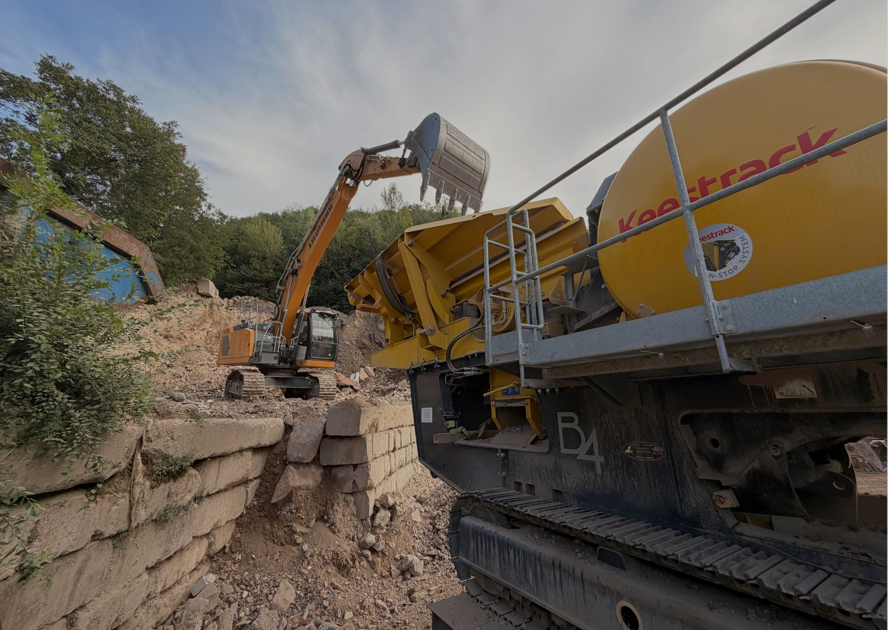
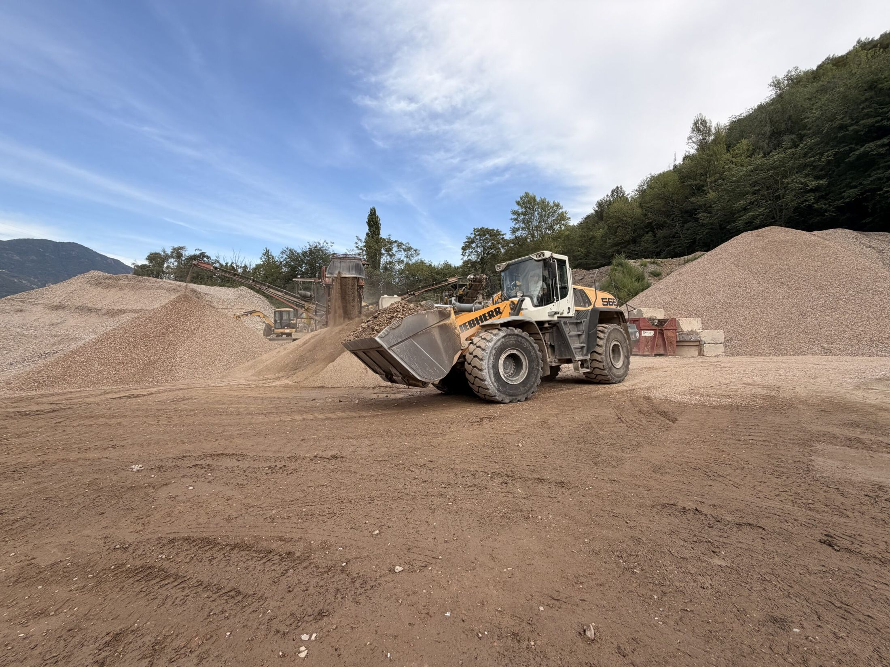
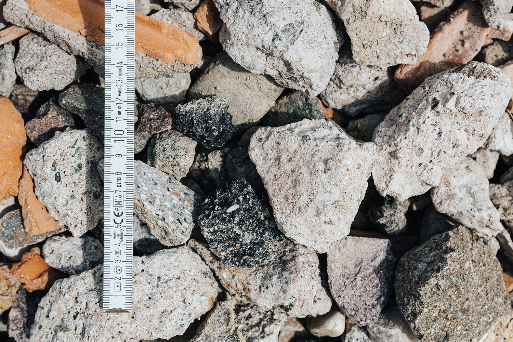
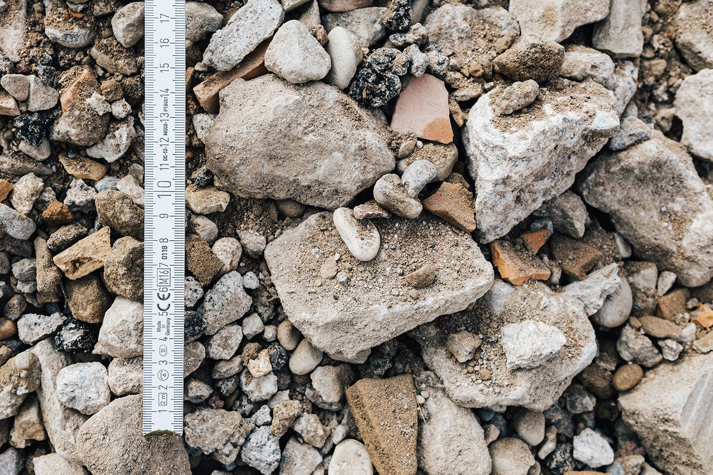
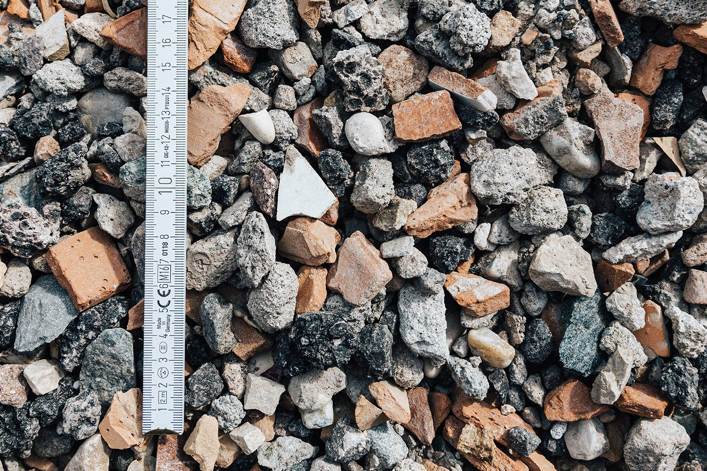
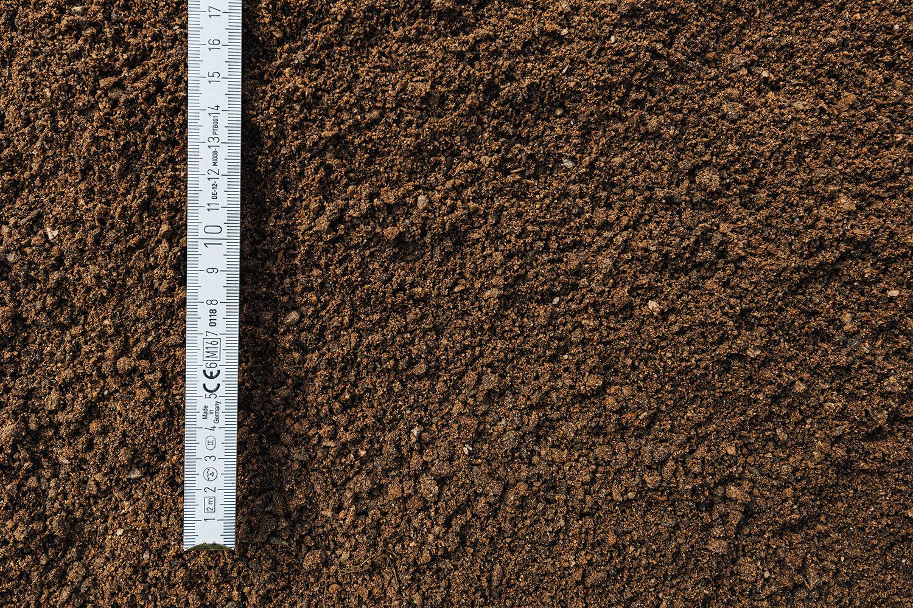
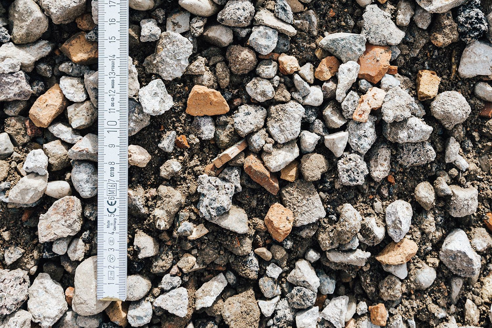
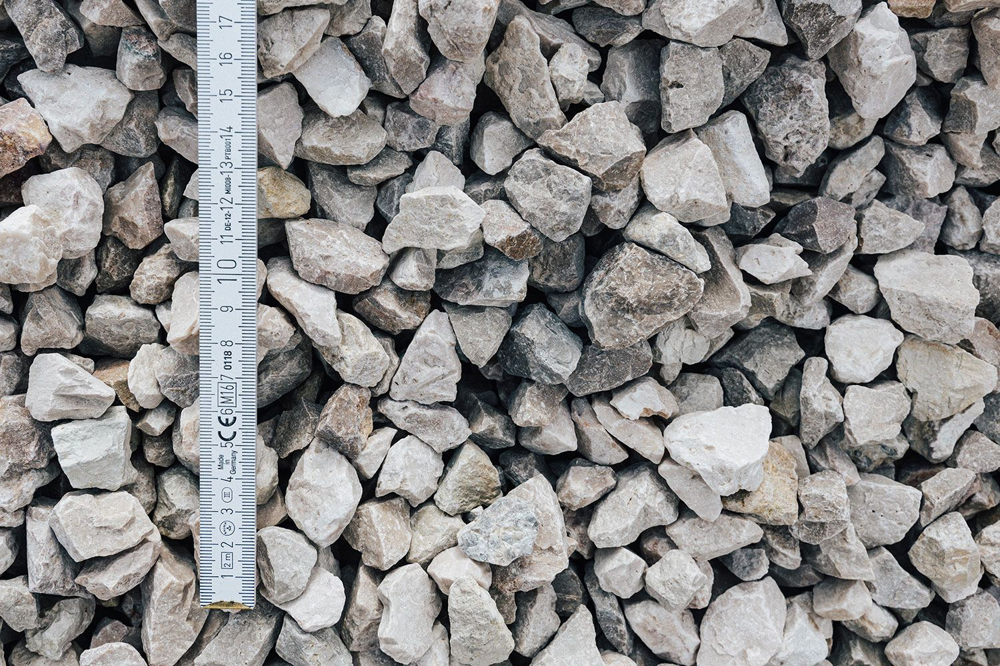
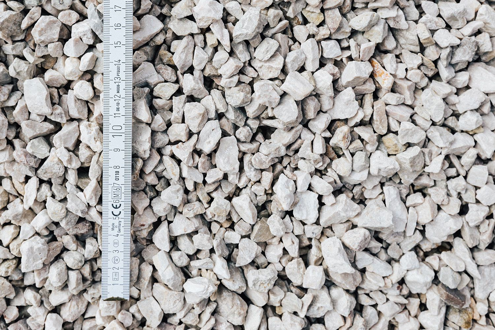

01 / 07
Recupero inerti da costruzione e demolizione
Demolizioni con separazione dei materiali e avvio a recupero degli inerti.
Anteprima riservata
Il nuovo sito di Mederle Recycling
umbra® studio web

Bolzano Recupero inerti da costruzione e demolizione
Mederle Recycling in numeri
Mezzi propri, personale formato, documenti in ordine. Dalla chiamata al formulario.

Demolizioni con separazione dei materiali e avvio a recupero degli inerti.

Selezione dei materiali e avvio a recupero, perché tornino risorse.

Ricezione, selezione e avvio a recupero dei materiali, perché tornino a essere risorse.

Selezione dei materiali e avvio a recupero, perché tornino risorse.

Ricezione, selezione e avvio a recupero dei materiali, perché tornino a essere risorse.

Ricezione, selezione e avvio a recupero dei materiali, perché tornino a essere risorse.

Ricezione, selezione e avvio a recupero dei materiali, perché tornino a essere risorse.
Procedura
Il materiale arriva in impianto e viene pesato.
Verifica di codici, documenti e qualità del carico.
Separazione per tipologia di materiale.
Ciò che è recuperabile torna in filiera.
Il materiale esce come risorsa.
Trascinate per scorrere.

Conformità
Lavora con noi
Mandateci il vostro curriculum: lo leggiamo tutto, e vi richiamiamo.
Contatti
Enti, aziende e privati: indicateci il servizio e la zona, vi rispondiamo con tempi e preventivo.
Anteprima riservata · preparata per Mederle Recycling
Abbiamo usato le foto e le informazioni già pubbliche dell'azienda. L'anteprima è gratuita: se vi piace, acconto del 25% e saldo quando il sito è online, con rimborso completo entro 30 giorni dalla messa online. Hosting, dominio, privacy e cookie li gestiamo noi.
umbra® studio web · umbragency.it